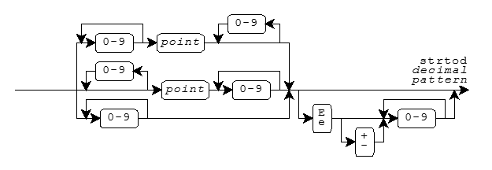
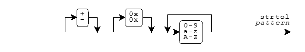

<stdlib.h>EXIT_FAILURE · EXIT_SUCCESS
· MB_CUR_MAX · NULL · RAND_MAX
abort · abs · atexit · atof · atoi · atol · bsearch · calloc ·
div · div_t · exit ·
free · getenv · labs ·
ldiv · ldiv_t · malloc
· mblen · mbstowcs · mbtowc · qsort · rand ·
realloc · size_t · srand
· strtod · strtol · strtoul · system · wchar_t
· wcstombs · wctomb
abort_handler_s · bsearch_s
· constraint_handler_t · errno_t
· getenv_s · ignore_handler_s
· mbstowcs_s · qsort_s · rsize_t · set_constraint_handler_s ·
wcstombs_s · wctomb_s
Include the standard header <stdlib.h> to declare an assortment of useful
functions and to define the macros and types that help you use them.
/* MACROS */
#define EXIT_FAILURE <rvalue integer expression>
#define EXIT_SUCCESS <rvalue integer expression>
#define MB_CUR_MAX <rvalue integer expression >= 1>
#define NULL <either 0, 0L, or (void *)0> [0 in C++]
#define RAND_MAX <integer constant expression >= 32,767>
/* TYPES */
typedef struct {
int quot, rem;
} div_t;
typedef struct {
long quot, rem;
} ldiv_t;
typedef ui-type size_t;
typedef i-type wchar_t; [keyword in C++]
/* FUNCTIONS */
int abs(int i);
long abs(long i); [C++ only]
long labs(long i);
div_t div(int numer, int denom);
ldiv_t div(long numer, long denom); [C++ only]
ldiv_t ldiv(long numer, long denom);
int rand(void);
void srand(unsigned int seed);
double atof(const char *s);
int atoi(const char *s);
long atol(const char *s);
double strtod(const char *s, char **endptr);
long strtol(const char *s, char **endptr, int base);
unsigned long strtoul(const char *s, char **endptr,
int base);
void *calloc(size_t nelem, size_t size);
void free(void *ptr);
void *malloc(size_t size);
void *realloc(void *ptr, size_t size);
int mblen(const char *s, size_t n);
size_t mbstowcs(wchar_t *wcs, const char *s, size_t n);
int mbtowc(wchar_t *pwc, const char *s, size_t n);
size_t wcstombs(char *s, const wchar_t *wcs, size_t n);
int wctomb(char *s, wchar_t wchar);
void exit(int status);
void abort(void);
char *getenv(const char *name);
int system(const char *s);
extern "C++"
void *bsearch(const void *key, const void *base,
size_t nelem, size_t size,
int (*cmp)(const void *ck, const void *ce)); [C++ only]
extern "C" [C++ only]
void *bsearch(const void *key, const void *base,
size_t nelem, size_t size,
int (*cmp)(const void *ck, const void *ce));
extern "C++"
void qsort(void *base, size_t nelem, size_t size,
int (*cmp)(const void *e1, const void *e2)); [C++ only]
extern "C" [C++ only]
void qsort(void *base, size_t nelem, size_t size,
int (*cmp)(const void *e1, const void *e2));
#if __STDC_WANT_LIB_EXT1__ [added with TR24731]
typedef void (*constraint_handler_t)(const char *s,
void *p, errno_t errcode);
typedef int errno_t;
typedef size_t rsize_t;
constraint_handler_t set_constraint_handler_s(
constraint_handler_t new_hand);
void abort_handler_s(const char *s,
void *p, errno_t errcode);
void ignore_handler_s(const char *s,
void *p, errno_t errcode);
errno_t getenv_s(size_t *needed, char *s,
rsize_t maxsize, const char *name);
errno_t wctomb_s(int *pstat,
char *s, rsize_t maxsize, wchar_t wchar);
errno_t mbstowcs_s(size_t *psize,
wchar_t *wcs, rsize_t maxsize,
const char *s, rsize_t n);
errno_t wcstombs_s(size_t *psize,
char *s, rsize_t maxsize,
const wchar_t *wcs, rsize_t n);
extern "C++"
void *bsearch_s(const void *key, const void *base,
rsize_t nelem, rsize_t size,
int (*cmp)(const void *ck, const void *ce,
void *context); [C++ only]
extern "C" [C++ only]
void *bsearch_s(const void *key, const void *base,
rsize_t nelem, rsize_t size,
int (*cmp)(const void *ck, const void *ce,
void *context);
extern "C++"
void qsort_s(void *base, rsize_t nelem, rsize_t size,
int (*cmp)(const void *e1, const void *e2,
void *context), [C++ only]
extern "C" [C++ only]
void qsort_s(void *base, rsize_t nelem, rsize_t size,
int (*cmp)(const void *e1, const void *e2,
void *context);
#endif /* __STDC_WANT_LIB_EXT1__ */
abortvoid abort(void);
The function calls raise(SIGABRT), which reports the abort
signal, SIGABRT. Default handling for the abort signal is to
cause abnormal program termination and report unsuccessful termination to the target environment. Whether
or not the target environment flushes output streams, closes open files, or removes temporary files on
abnormal termination is implementation defined. If you specify handling that causes raise to return control to abort, the function calls
exit(EXIT_FAILURE), to report unsuccessful termination with EXIT_FAILURE.
abort never returns to its caller.
abort_handler_s
void abort_handler_s(const char *s, void *p,
errno_t errcode); [added with TR24731]
The function writes mesg to the standard error stream and calls abort. It can serve as a constraint
handler.
absint abs(int i); long abs(long i); [C++ only]
The function returns the absolute value of i, |i|. The version that accepts a
long argument behaves the same as labs
atexit
extern "C++"
int atexit(void (*func)(void)); [C++ only]
extern "C" [C++ only]
int atexit(void (*func)(void));
The function registers the function whose address is func to be called by exit (or when main returns) and
returns zero if successful. The functions are called in reverse order of registry. You can register at
least 32 functions.
Furthermore, in C++, if control leaves a called function because it fails to handle a thrown exception,
terminate is called.
The function is thread safe.
atofdouble atof(const char *s);
The function converts the initial characters of the string s to an equivalent value
x of type double and then returns x. The conversion is the same as for
strtod(s, 0), except that a value is not necessarily stored in errno if a conversion error occurs.
atoiint atoi(const char *s);
The function converts the initial characters of the string s to an equivalent value
x of type int and then returns x. The conversion is the same as for
(int)strtol(s, 0, 10), except that a value is not necessarily stored in
errno if a conversion error occurs.
atollong atol(const char *s);
The function converts the initial characters of the string s to an equivalent value
x of type long and then returns x. The conversion is the same as for
strtol(s, 0, 10), except that a value is not necessarily stored in
errno if a conversion error occurs.
bsearch
extern "C++"
void *bsearch(const void *key, const void *base,
size_t nelem, size_t size,
int (*cmp)(const void *ck, const void *ce)); [C++ only]
extern "C" [C++ only]
void *bsearch(const void *key, const void *base,
size_t nelem, size_t size,
int (*cmp)(const void *ck, const void *ce));
The function searches an array of ordered values and returns the address of an array element that equals
the search key key (if one exists); otherwise, it returns a null pointer. The array consists
of nelem elements, each of size bytes, beginning with the element whose address
is base.
bsearch calls the comparison function whose address is cmp to compare the
search key with elements of the array. The comparison function must return:
ck is less than the array element
cebsearch assumes that the array elements are in nondescending order according to the same
comparison rules that are used by the comparison function.
bsearch_s
extern "C++"
void *bsearch_s(const void *key, const void *base,
rsize_t nelem, rsize_t size,
int (*cmp)(const void *ck, const void *ce,
void *context); [C++ only]
extern "C" [C++ only]
void *bsearch_s(const void *key, const void *base,
rsize_t nelem, rsize_t size,
int (*cmp)(const void *ck, const void *ce,
void *context); [added with TR24731]
A runtime constraint violation occurs if:
nelem is greater than RSIZE_MAXsize is greater than RSIZE_MAXnelem is nonzero and key is a null pointernelem is nonzero and base is a null pointernelem is nonzero and cmp is a null pointerIf such a violation occurs, the function returns a null pointer.
Otherwise, the function searches an array of ordered values and returns the address of an array element
that equals the search key key (if one exists); otherwise, it returns a null pointer. The
array consists of nelem elements, each of size bytes, beginning with the element
whose address is base.
bsearch calls the comparison function whose address is cmp to compare the
search key with elements of the array, passing context as the third argument. The comparison
function must return:
ck is less than the array element
cebsearch assumes that the array elements are in nondescending order according to the same
comparison rules that are used by the comparison function.
callocvoid *calloc(size_t nelem, size_t size);
The function allocates an array object containing nelem elements each of size
size, stores zeros in all bytes of the array, and returns the address of the first element of
the array if successful; otherwise, it returns a null pointer. You can safely convert the return value to
an object pointer of any type whose size in bytes is not greater than size.
constraint_handler_t
typedef void (*constraint_handler_t(const char *s,
void *p, errno_t errcode); [added with TR24731]
The type describes a pointer to a function suitable for use as a constraint handler.
divdiv_t div(int numer, int denom); ldiv_t div(long numer, long denom); [C++ only]
The function divides numer by denom and returns both quotient and remainder in
the structure result x, if the quotient can be represented. The structure member
x.quot is the algebraic quotient truncated toward zero. The structure member
x.rem is the remainder, such that numer == x.quot*denom + x.rem.
div_t
typedef struct {
int quot, rem;
} div_t;
The type is the structure type returned by the function div. The
structure contains members that represent the quotient (quot) and remainder (rem)
of a signed integer division with operands of type int. The members shown above can occur in either
order.
errno_ttypedef int errno_t; [added with TR24731]
The type is a synonym for int, used to represent a value that can be stored in errno.
exitvoid exit(int status);
The function calls all functions registered by atexit, closes all
files, and returns control to the target environment. If status is zero or EXIT_SUCCESS, the program reports successful termination. If
status is EXIT_FAILURE, the program reports
unsuccessful termination. An implementation can define additional values for status.
exit never returns to its caller.
EXIT_FAILURE#define EXIT_FAILURE <rvalue integer expression>
The macro yields the value of the status argument to exit
that reports unsuccessful termination.
EXIT_SUCCESS#define EXIT_SUCCESS <rvalue integer expression>
The macro yields the value of the status argument to exit
that reports successful termination.
freevoid free(void *ptr);
If ptr is not a null pointer, the function deallocates the object whose address is
ptr; otherwise, it does nothing. You can deallocate only objects that you first allocate by
calling calloc, malloc, or realloc.
getenvchar *getenv(const char *name);
The function searches an environment list, which each
implementation defines, for an entry whose name matches the string name. If the function finds
a match, it returns a pointer to a static-duration object that holds the definition associated with the
target environment name. Otherwise, it returns a null pointer. Do not alter the value stored in the object.
If you call getenv again, the value stored in the object can change. No target environment
names are required of all environments.
The function is thread safe.
getenv_s
errno_t getenv_s(size_t *needed, char *s,
rsize_t maxsize, const char *name); [added with TR24731]
A runtime constraint violation occurs if:
s is a null pointermaxsize is zero or greater than RSIZE_MAXname is a null pointerIf such a violation occurs, and needed is not a null pointer, the function stores zero in
*len. It then returns the error code it reported to the constraint handler.
Otherwise, the function searches the environment list for an
entry whose name matches the string name. If the function finds a match:
needed is not a null pointer, the function stores in *len the length of
the null-terminated definition associated with the target environment namemaxsize, the function copies the definition to
s and returns zeromaxsize, the function stores a null character in
s[0] and returns a nonzero valueIf the function does not find a match:
needed is not a null pointer, the function stores zero in *lens[0] and returns a nonzero valueignore_handler_s
void ignore_handler_s(const char *s, void *p,
errno_t errcode); [added with TR24731]
The function simply returns. It can serve as a constraint handler.
labslong labs(long i);
The function returns the absolute value of i, |i|, the same as abs.
ldivldiv_t ldiv(long numer, long denom);
The function divides numer by denom and returns both quotient and remainder in
the structure result x, if the quotient can be represented. The structure member
x.quot is the algebraic quotient truncated toward zero. The structure member
x.rem is the remainder, such that numer == x.quot*denom + x.rem.
ldiv_t
typedef struct {
long quot, rem;
} ldiv_t;
The type is the structure type returned by the function ldiv. The
structure contains members that represent the quotient (quot) and remainder (rem)
of a signed integer division with operands of type long. The members shown above can occur in either
order.
mallocvoid *malloc(size_t size);
The function allocates an object of size size, and returns the address of the object if
successful; otherwise, it returns a null pointer. The values stored in the object are indeterminate. You
can safely convert the return value to an object pointer of any type whose size is not greater than
size.
MB_CUR_MAX#define MB_CUR_MAX <rvalue integer expression >= 1>
The macro yields the maximum number of characters that constitute a multibyte character in the current locale. Its value is <= MB_LEN_MAX.
mblenint mblen(const char *s, size_t n);
If s is not a null pointer, the function returns the number of bytes in the multibyte
string s that constitute the next multibyte character, or it returns -1 if the next
n (or the remaining) bytes do not constitute a valid multibyte character. mblen
does not include the terminating null in the count of bytes. The function can use a conversion state stored in an internal static-duration object to
determine how to interpret the multibyte string.
If s is a null pointer and if multibyte characters have a state-dependent encoding in the current locale, the function stores the initial conversion state in its internal static-duration
object and returns nonzero; otherwise, it returns zero.
mbstowcssize_t mbstowcs(wchar_t *wcs, const char *s, size_t n);
The function stores a wide character string, in successive elements of the array whose first element has
the address wcs, by converting, in turn, each of the multibyte characters in the multibyte
string s. The string begins in the initial
conversion state. The function converts each character as if by calling mbtowc (except that the internal conversion state stored for that function is
unaffected). It stores at most n wide characters, stopping after it stores a null wide
character. It returns the number of wide characters it stores, not counting the null wide character, if all
conversions are successful; otherwise, it returns -1.
mbstowcs_s
errno_t mbstowcs_s(size_t *psize,
wchar_t *wcs, rsize_t maxsize,
const char *s, rsize_t n); [added with TR24731]
A runtime constraint violation occurs if:
wcs is not a null pointer and maxsize is zero or greater than
RSIZE_MAXwcs is a null pointer and maxsize is nonzeropsize is a null pointers is a null pointerwcs is not a null pointer and n is greater than RSIZE_MAXwcs is not a null pointer and the wide-character sequence generated by the function does
not end with a null wide character within the first maxsize elementsIf such a violation occurs, other than the first one, and wcs is not a null pointer, the
function stores a null wide character at wcs[0]]. If psize is not a null pointer,
the function stores (rsize_t)-1 in *psize. It returns the error code it reported
to the constraint handler.
Otherwise, the function stores a wide character string, in successive elements of the array whose first
element has the address wcs, by converting, in turn, each of the multibyte characters in the
multibyte string s. The string begins in the initial conversion state. The function converts each
character as if by calling mbtowc (except that the internal conversion
state stored for that function is unaffected). It stores at most maxsize wide characters,
stopping after it stores a null wide character. If the conversion stores no null wide character, and stores
less than maxsize wide characters, the function stores a null wide character at the end of the
converted wide characters.
The function stores at *psize the number of converted wide characters, not counting any
terminating null wide character. It returns zero if all conversions are successful; otherwise, it returns a
nonzero value.
mbtowcint mbtowc(wchar_t *pwc, const char *s, size_t n);
If s is not a null pointer, the function determines x, the number of bytes in
the multibyte string s that constitute the next multibyte character. (x cannot be
greater than MB_CUR_MAX.) If pwc is not a null pointer,
the function converts the next multibyte character to its corresponding wide-character value and stores
that value in *pwc. It then returns x, or it returns -1 if the next
n or the remaining bytes do not constitute a valid multibyte character. mbtowc
does not include the terminating null character in the count of bytes. The function can use a conversion state stored in an internal static-duration object to
determine how to interpret the multibyte string.
If s is a null pointer and if multibyte characters have a state-dependent encoding in the current locale, the function stores the initial conversion state in its internal static-duration
object and returns nonzero; otherwise, it returns zero.
The function is not necessarily thread safe.
NULL#define NULL <either 0, 0L, or (void *)0> [0 in C++]
The macro yields a null pointer constant that is usable as an address constant expression.
qsort
extern "C++"
void qsort(void *base, size_t nelem, size_t size,
int (*cmp)(const void *e1, const void *e2)); [C++ only]
extern "C" [C++ only]
void qsort(void *base, size_t nelem, size_t size,
int (*cmp)(const void *e1, const void *e2));
The function sorts, in place, an array consisting of nelem elements, each of
size bytes, beginning with the element whose address is base. It calls the
comparison function whose address is cmp to compare pairs of elements. The comparison function
must return a negative value if e1 is less than e2, zero if the two are equal, or
a positive value if e1 is greater than e2. Two array elements that are equal can
appear in the sorted array in either order.
qsort_s
extern "C++"
void qsort_s(void *base, rsize_t nelem, rsize_t size,
int (*cmp)(const void *e1, const void *e2,
void *context); [C++ only]
extern "C" [C++ only]
void qsort_s(void *base, rsize_t nelem, rsize_t size,
int (*cmp)(const void *e1, const void *e2,
void *context); [added with TR24731]
A runtime constraint violation occurs if:
nelem is greater than RSIZE_MAXsize is greater than RSIZE_MAXnelem is nonzero and base is a null pointernelem is nonzero and cmp is a null pointerIf such a violation occurs, the function does nothing.
Otherwise, the function sorts, in place, an array consisting of nelem elements, each of
size bytes, beginning with the element whose address is base. It calls the
comparison function whose address is cmp to compare pairs of elements, passing
context as the third argument. The comparison function must return a negative value if
e1 is less than e2, zero if the two are equal, or a positive value if
e1 is greater than e2. Two array elements that are equal can appear in the sorted
array in either order.
randint rand(void);
The function computes a pseudo-random number x based on a seed value stored in an internal
static-duration object, alters the stored seed value, and returns x. x is in the
interval [0, RAND_MAX].
The function is not necessarily thread safe.
RAND_MAX#define RAND_MAX <integer constant expression >= 32,767>
The macro yields the maximum value returned by rand.
reallocvoid *realloc(void *ptr, size_t size);
The function allocates an object of size size, possibly obtaining initial stored values
from the object whose address is ptr. It returns the address of the new object if successful;
otherwise, it returns a null pointer. You can safely convert the return value to an object pointer of any
type whose size is not greater than size.
If ptr is not a null pointer, it must be the address of an existing object that you first
allocate by calling calloc, malloc,
or realloc. If the existing object is not larger than the newly allocated object,
realloc copies the entire existing object to the initial part of the allocated object. (The
values stored in the remainder of the object are indeterminate.) Otherwise, the function copies only the
initial part of the existing object that fits in the allocated object. If realloc succeeds in
allocating a new object, it deallocates the existing object. Otherwise, the existing object is left
unchanged.
If ptr is a null pointer, the function does not store initial values in the newly created
object.
rsize_ttypedef size_t rsize_t; [added with TR24731]
The type is a synonym for size_t, used to represent a function argument to be checked on
entry to a function. It is a runtime constraint
violation for an argument of type rsize_t to be greater than RSIZE_MAX.
set_constraint_handler_s
constraint_handler_t set_constraint_handler_s(
constraint_handler_t new_hand); [added with TR24731]
The function sets the pointer to the current constraint
handler to new_hand and returns the previous pointer.
size_ttypedef ui-type size_t;
The type is the unsigned integer type ui-type of an object that you declare to store
the result of the sizeof operator.
srandvoid srand(unsigned int seed);
The function stores the seed value seed in a static-duration object that rand uses to compute a pseudo-random number. From a given seed value, that
function always generates the same sequence of return values. The program behaves as if the target
environment calls srand(1) at program startup.
strtoddouble strtod(const char *s, char **endptr);
The function converts the initial characters of the string s to an equivalent value
x of type double. If endptr is not a null pointer, the function stores a
pointer to the unconverted remainder of the string in *endptr. The function then returns
x.
The initial characters of the string s must consist of zero or more characters for which
isspace returns nonzero, followed by an optional plus or
minus sign, followed by the longest sequence of one or more characters that match the pattern for
strtod shown in the diagram.

Here, a point is the decimal-point character
for the current locale. (It is the dot (.) in the "C" locale.) If the string s matches this pattern,
its equivalent value is the decimal integer represented by any digits to the left of the
point, plus the decimal fraction represented by any digits to the right of the
point, times 10 raised to the signed decimal integer power that follows an optional
e or E. A leading minus sign negates the value.
In locales other than the "C" locale,
strtod can define additional patterns as well.
If the string s does not match a valid pattern, the value stored in *endptr is
s, and x is zero. If a range error occurs,
strtod behaves exactly as the functions declared in <math.h>.
strtol
long strtol(const char *s, char **endptr,
int base);
The function converts the initial characters of the string s to an equivalent value
x of type long. If endptr is not a null pointer, it stores a pointer to
the unconverted remainder of the string in *endptr. The function then returns
x.
The initial characters of the string s must consist of zero or more characters for which
isspace returns nonzero, followed by the longest sequence of
one or more characters that match the pattern for strtol shown in the diagram.

The function accepts the sequences 0x or 0X only when base equals
zero or 16. The letters a-z or A-Z represent digits in the range [10, 36). If
base is in the range [2, 36], the function accepts only digits with values less than
base. If base == 0, then a leading 0x or 0X (after any
sign) indicates a hexadecimal (base 16) integer, a leading 0 indicates an octal (base 8)
integer, and any other valid pattern indicates a decimal (base 10) integer.
If the string s matches this pattern, its equivalent value is the signed integer of the
appropriate base represented by the digits that match the pattern. (A leading minus sign negates the
value.) In locales other than the "C" locale,
strtol can define additional patterns as well.
If the string s does not match a valid pattern, the value stored in *endptr is
s, and x is zero. If the equivalent value is too large to represent as type
long, strtol stores the value of ERANGE in
errno and returns either LONG_MAX, if x is positive, or LONG_MIN, if x is negative.
strtoul
unsigned long strtoul(const char *s, char **endptr,
int base);
The function converts the initial characters of the string s to an equivalent value
x of type unsigned long. If endptr is not a null pointer, it stores a
pointer to the unconverted remainder of the string in *endptr. The function then returns
x.
strtoul converts strings exactly as does strtol, but
reports a range error only if the equivalent value is too large to represent as type unsigned long.
In this case, strtoul stores the value of ERANGE
in errno and returns ULONG_MAX.
systemint system(const char *s);
If s is not a null pointer, the function passes the string s to be executed by
a command processor, supplied by the target environment, and returns
the status reported by the command processor. If s is a null pointer, the function returns
nonzero only if the target environment supplies a command processor. Each implementation defines what
strings its command processor accepts.
wchar_ttypedef i-type wchar_t; [keyword in C++]
The type is the integer type i-type of a wide-character constant, such as L'X'. You
declare an object of type wchar_t to hold a wide character.
wcstombssize_t wcstombs(char *s, const wchar_t *wcs, size_t n);
The function stores a multibyte string, in successive elements of the array whose first element has the
address s, by converting in turn each of the wide characters in the string wcs.
The multibyte string begins in the initial conversion
state. The function converts each wide character as if by calling wctomb (except that the conversion
state stored for that function is unaffected). It stores no more than n bytes, stopping
after it stores a null character. It returns the number of bytes it stores, not counting the null
character, if all conversions are successful; otherwise, it returns -1.
wcstombs_s
errno_t wcstombs_s(size_t *psize,
char *s, rsize_t maxsize,
const wchar_t *wcs, rsize_t n) [added with TR24731];
A runtime constraint violation occurs if:
s is not a null pointer and maxsize is zero or greater than RSIZE_MAXs is a null pointer and maxsize is nonzeropsize is a null pointerwcs is a null pointers is not a null pointer and n is greater than RSIZE_MAXs is not a null pointer and the multibyte sequence generated by the function does not
end with a null character within the first maxsize elementsIf such a violation occurs, other than the first one, and s is not a null pointer, the
function stores a null character at s[0]. If psize is not a null pointer, the
function stores (rsize_t)-1 in *psize. It returns the error code it reported to
the constraint handler.
Otherwise, the function stores a multibyte string, in successive elements of the array whose first
element has the address s, by converting in turn each of the wide characters in the string
wcs. The multibyte string begins in the initial conversion state. The function converts each wide
character as if by calling wctomb (except that the conversion state stored for that function is unaffected). It stores
no more than maxsize bytes, stopping after it stores a null character. It returns zero if all
conversions are successful; otherwise, it returns a nonzero value. If the conversion stores no null
character, and stores less than maxsize characters, the function stores a null character at
the end of the converted characters.
The function stores at *psize the number of converted characters, not counting any
terminating null character. It returns zero if all conversions are successful; otherwise, it returns a
nonzero value.
wctombint wctomb(char *s, wchar_t wchar);
If s is not a null pointer, the function determines N, the number of bytes
needed to represent the multibyte character corresponding to the wide character wchar.
N cannot exceed MB_CUR_MAX. The function converts
wchar to its corresponding multibyte character, which it stores in successive elements of the
array whose first element has the address s. It then returns N, or it returns -1
if wchar does not correspond to a valid multibyte character. wctomb includes the
terminating null character in the count of bytes. The function can use a conversion state stored in a static-duration object to determine how
to interpret the multibyte character string.
If s is a null pointer and if multibyte characters have a state-dependent encoding in the current locale, the function stores the initial conversion state in its static-duration object and
returns nonzero; otherwise, it returns zero.
The function is not necessarily thread safe.
wctomb_s
errno_t wctomb_s(int *pstat,
char *s, rsize_t maxsize, wchar_t wchar); [added with TR24731]
A runtime constraint violation occurs if:
pstat is a null pointers is not a null pointer and maxsize is less than N, the number
of bytes needed to represent the multibyte character corresponding to the wide character
wchar (N cannot exceed MB_CUR_MAX.)s is a null pointer and maxsize is nonzeromaxsize is greater than RSIZE_MAXIf such a violation occurs, and s is not a null pointer, the function accesses at most the
first N characters beginning at s. The function does not store anything into
*pstat. It returns the error code it reported to the constraint handler.
Otherwise, if s is not a null pointer:
wchar to its corresponding multibyte character, which it stores in
successive elements of the array whose first element has the address s*pstat either N, if wchar corresponds to a valid
multibyte character, or -1.wctomb_s includes the terminating null character in the count of bytes. The function can
use a conversion state stored in a static-duration object to
determine how to interpret the multibyte character string.
If s is a null pointer:
*pstat and returns a nonzero value*pstat and returns zero.See also the Table of Contents and the Index.
Copyright © 1992-2010 by P.J. Plauger and Jim Brodie. All rights reserved.